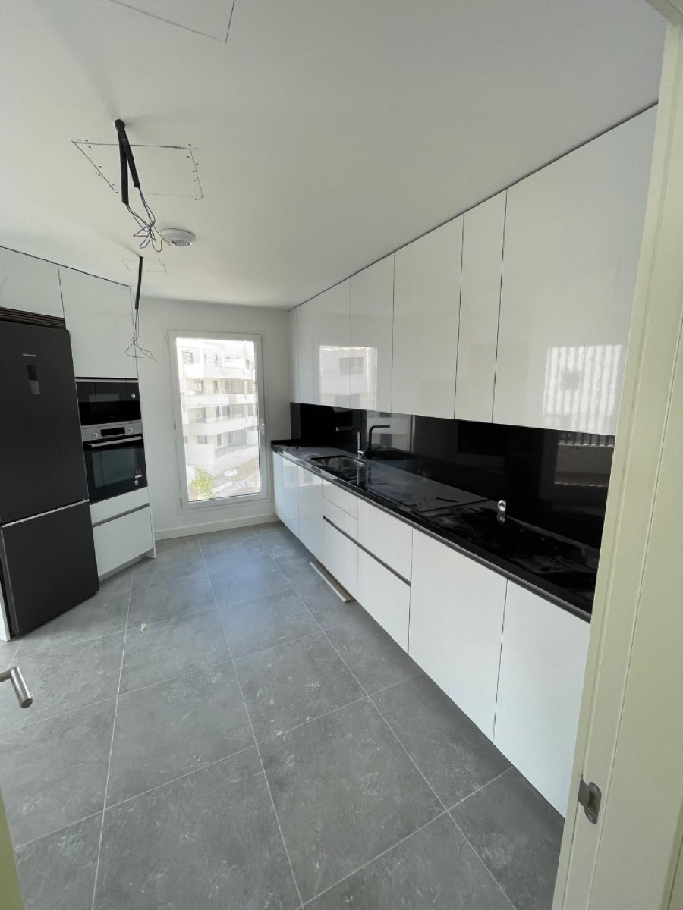

Inicio › Localidades › Torremolinos
Pintor en Torremolinos desde 2012 — Hablo español, inglés y árabe
Soy Asis. Llevo desde 2012 pintando y reformando casas en Torremolinos y la Costa del Sol. Trabajo limpio, precio cerrado por escrito antes de empezar y me entiendo con cualquier cliente — en el idioma que necesites.

En Torremolinos desde 2012. Aquí hay mucho apartamento turístico y mucho propietario que vive fuera — sé cómo trabajar con cada situación. Precio cerrado por escrito antes de empezar y factura.
Por qué la gente de Torremolinos me llama
- ✅ Te hablo en tu idioma: Torremolinos tiene muchos propietarios extranjeros, sobre todo ingleses y escandinavos. Conmigo no hay barrera — español, inglés o árabe, lo que necesites.
- ✅ Precio cerrado, sin sustos: lo que te digo al principio es lo que pagas al final. Todo por escrito. Si aparece algo que no estaba previsto, te aviso antes de tocarlo.
- ✅ Materiales para la costa: el ambiente marino de Torremolinos destroza la pintura barata en poco tiempo. Sé qué funciona aquí y qué no, y te lo explico antes de que decidas.
- ✅ Rápido y limpio: protejo lo que hay en la casa y recojo cada día. Especialmente importante en pisos de alquiler donde los días parados cuestan dinero.
- ✅ Si algo no queda como hablamos: me llamas y vuelvo. Sin excusas y sin que tengas que perseguirme.
- ✅ Conmigo directamente: sin intermediarios. Desde el primer mensaje hasta el último día de obra eres tú y yo.
Por dónde me muevo en Torremolinos
Torremolinos no es solo el paseo marítimo — tiene varios barrios con carácter muy distinto:
- 🌊 La Carihuela — el barrio de pescadores reconvertido, mucho apartamento en primera línea, clientes que quieren renovar para alquilar
- 🏖️ Bajondillo — zona de playa con mucho turismo, apartamentos que se alquilan por semanas, hay que trabajar rápido y dejar todo perfecto
- 🏙️ Torremolinos Centro — más residencial, pisos de familia, comunidades de vecinos, reformas más tranquilas
- 🌴 Playamar — urbanizaciones con mucho residente fijo, mezcla de familias españolas y extranjeros que llevan años aquí
- 🏘️ El Pinillo — zona más interior y tranquila, pisos de toda la vida que llevan tiempo sin reformar
- ⛰️ Montemar — chalets y casas en la parte alta, vistas al mar, clientes que suelen pedir acabados más cuidados
- 🌿 Los Álamos — entre Torremolinos y Málaga capital, urbanizaciones residenciales
Si tu zona no aparece, escríbeme igualmente — no descarto nada por distancia.
Lo que más me piden aquí
🎨 Pintura de apartamentos turísticos
Desde 4€/m². Es lo que más hago en La Carihuela y Bajondillo — propietarios que necesitan dejar el piso impecable entre temporadas sin perder días de alquiler. Un piso de 60m² en 3-4 días.
🏢 Fachadas y pintura exterior
Desde 6€/m². El sol y la sal de Torremolinos atacan fuerte. Uso pinturas específicas para fachadas costeras — te explico las diferencias antes de elegir para que sepas en qué te gastas el dinero.
💡 Falsos techos con LED
Desde 50€/m² instalado. Cada vez lo piden más en Montemar y en pisos reformados del centro. Cambia la habitación entera sin tocar las paredes — la gente no se cree lo que queda.
🔧 Tabiques y revestimientos de placas de yeso
Tabiques desde 25€/m². Muy útil para dividir espacios en apartamentos sin hacer obra grande. Limpio, rápido y sin polvo de cemento por todos lados.
🏠 Reformas de baño y cocina completas
Baño desde 2.000€ · cocina desde 3.000€. Lo gestiono todo yo — placas de yeso, pintura y acabados. Sin que tengas que coordinar a tres personas que se culpan entre sí si algo va mal.
"Pero tú vienes desde Granada, ¿no me sale más caro?"
Es la pregunta de siempre. La respuesta es no: cuando tengo obras en Torremolinos me quedo varios días seguidos, no hago el viaje desde Granada cada mañana. Si la obra dura 3 días o más, no te cobro desplazamiento.
Para trabajos pequeños (una habitación, un repaso), te lo digo antes y lo valoramos. Sin letra pequeña.
Cómo trabajamos tú y yo
📱 1. Me escribes
WhatsApp, llamada o email — lo que prefieras. Te contesto yo directamente. Si estoy en obra, te llamo en cuanto puedo.
🚗 2. Me paso por tu casa
Quedamos, veo lo que hay, medimos y hablamos. Sin compromiso y sin coste.
📄 3. Presupuesto por escrito
El mismo día o al siguiente. Con todo detallado: materiales, mano de obra y días. Sin letra pequeña. Si te encaja, seguimos. Si no, sin problema.
🔨 4. Empezamos cuando tú digas
Te digo los días, aviso si hay algún cambio. Si aparece algo inesperado en obra, te llamo antes de tocarlo.
✅ 5. Revisión final juntos
Antes de cobrar el final, damos una vuelta y vemos que todo está bien. Si hay algo que no convence, lo arreglo ahí mismo.
Pintor en Torremolinos: por qué aquí se pinta distinto
Torremolinos se llenó de edificios en los años sesenta y setenta, y eso se nota en cuanto entras a pintar. Muchos pisos tienen gotelé debajo de tres o cuatro manos de dueños anteriores, techos con humedad de condensación en los baños interiores y terrazas que se cerraron en su día con aluminio y hoy sudan por dentro en invierno.
El gotelé es la conversación de siempre. Se puede pintar encima y queda decente, o se puede alisar y el piso parece otro. Alisar cuesta más y lleva días porque hay que plastecer, lijar, imprimar y luego pintar, pero es lo que más cambia una vivienda antigua, y se nota muchísimo en las fotos de un anuncio de alquiler. Te lo cuento con precios en quitar gotelé y alisar paredes.
Lo segundo es la humedad. Aquí muchos baños no tienen ventana, solo un extractor que casi nunca tira lo que debería. Cada invierno aparecen los puntos negros en el techo. Si te lo pinto encima, vuelven. Hay que tratar la zona, mejorar la ventilación y pintar luego con producto antimoho: lo explico en reparación de humedades.
Y lo tercero, el exterior. Terrazas, barandillas y las caras del edificio que miran al mar se llevan sol y sal todo el año. Ahí trabajo desde 6 €/m² con producto de exterior de verdad, no con pintura de interior rebajada, que es el atajo con el que te ahorras un dinero hoy y repintas dentro de dos veranos: pintura de fachadas y exteriores.
Si tu piso se alquila por semanas, hay una forma de organizar esto para que pare lo mínimo. La tengo escrita aquí: pintar un piso de alquiler vacacional en la costa.
Tabiques y falsos techos en Torremolinos: ganar una habitación
El encargo en placas de yeso laminado más habitual aquí es partir un salón largo para sacar un dormitorio más. En un piso de alquiler eso es directamente más plazas y más precio por noche. Tabique simple desde 25 €/m²; doble desde 35 €/m² si además quieres que no se oiga de una habitación a otra, que en apartamentos pequeños se agradece mucho.
Después está el techo: bajarlo para esconder los conductos del aire y el cableado sale desde 30 €/m², y los falsos techos con LED desde 50 €/m² con la luz puesta. Es de las pocas cosas que cambian la sensación de un salón entero sin tocar ni una pared.
Y algo que no te va a decir todo el mundo: en baños y cocinas hay que poner placa hidrófuga, no la corriente. Si te pasan un presupuesto muy barato, pregunta qué placa lleva antes de firmarlo.
Para que te hagas una idea de lo que puede costar
Cálculo orientativo con mi tarifa, no una obra concreta que haya hecho. Un apartamento de 55 m² en Torremolinos, pintura completa más un techo en el salón:
- Pintura interior de toda la vivienda desde 4 €/m² de superficie pintada
- Falso techo de placas de yeso con LED en el salón, desde 50 €/m²
- Rodapiés, remates y protección de muebles y suelos
- Suele moverse entre 1.300 € y 1.800 €, y unos 4 o 5 días
Digo "suele" con toda la intención. Si hay gotelé que alisar o humedad que tratar, sube. Por eso voy a verlo antes de darte un número, y ese número va por escrito.
Cerca de Torremolinos también trabajo aquí
Me muevo por toda la Costa del Sol. Si tienes otra propiedad cerca, mira pintor y placas de yeso en Benalmádena, Fuengirola o Marbella. Si son varios pisos, dímelo de una vez y los hago seguidos: me cunde el viaje y te sale mejor.
Lo que no hago, y te lo digo de frente
No hago fontanería ni electricidad de obra nueva, no toco estructura y no trabajo colgado de andamio en edificios altos. Tampoco doy una mano por encima de una humedad sin tratarla para salir del paso antes de una reserva. Sé que a veces es lo que se pide con prisa, pero eso vuelve a salir en un mes y el que queda mal soy yo.
📱 Pídeme presupuesto para tu casa en Torremolinos
WhatsApp / llamada: 633 915 898 — te respondo yo mismo
Email: info@pintareformas.es
Idiomas: Español · English · العربية
Horario: Lun-Vie 8:00-19:00 · Sáb 9:00-14:00
Lo que más me preguntan en Torremolinos
¿Cuánto tardas en pintar un apartamento en Torremolinos?
Un apartamento de 55-70 m² pintado entero son 3 o 4 días si las paredes están en condiciones normales. Si hay que quitar gotelé o tratar humedad, súmale un par de días. Te digo el número de días en el presupuesto y me comprometo a él: si tienes una entrada de huéspedes el viernes, esa fecha manda.
Mi piso es de los años setenta y tiene gotelé por todas partes, ¿se puede alisar?
Sí, y en Torremolinos es lo más pedido en edificios de esa época. Alisar es plastecer, lijar, imprimar y luego pintar. No es dar una mano por encima. Cuesta más que pintar sin más y lleva días, pero es lo que de verdad hace que un piso viejo parezca otro, sobre todo en las fotos.
El piso está en primera línea, ¿la pintura aguanta ahí?
En primera línea el aire trae sal y eso ataca sobre todo terrazas, barandillas y las paredes que dan al mar. En esas zonas uso pintura de exterior para ambiente marino, desde 6 €/m², no interior estirada. Dentro de la vivienda con una lavable buena vas servido: el enemigo ahí son los roces del trasiego, no la sal.
¿Hay problema para trabajar en un bloque con comunidad?
Ninguno, estoy hecho a ello. Respeto los horarios de ruido, protejo el ascensor si la finca lo pide y no dejo nada en el portal ni en el rellano. Si el administrador quiere permiso previo para subir material, lo pedimos antes y no el día de empezar.
¿Montas tú los tabiques y los techos, o tengo que buscar a otro?
Lo hago yo. Tabique simple desde 25 €/m², doble desde 35 €/m², falso techo básico desde 30 €/m² y con LED desde 50 €/m². La ventaja de que lo haga la misma persona es que no hay discusión sobre quién dejó mal el remate entre el techo y la pared: soy yo y lo arreglo yo.
Lo que dicen de mí en Google
Estas dos las han escrito clientes míos en Google, con su nombre. No les he cambiado ni una coma. Las demás las tienes en mi ficha, que es donde de verdad se ve si un pintor cumple o no. — Asis
"Todo muy profesional y un trabajo perfecto, es muy detallista y minucioso."
"Tengo la suerte de haber conocido a Asís, trabajador excelente sabiendo lo que hace, con esmero, con delicadeza. De forma minuciosa, educado, respetuoso, atento, después de varios trabajos que nos hizo a mí y a mi familia, lo tenemos en un pedestal, como un amigo, para nosotros. El mejor. Gracias x tu profesionalidad"
PintaReformas © 2026 | Pintura, tabiques y falsos techos en Torremolinos
Volver a inicio |
Blog |
FAQ